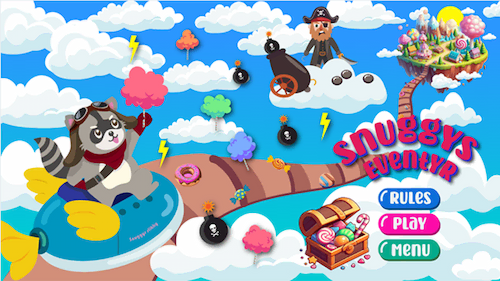
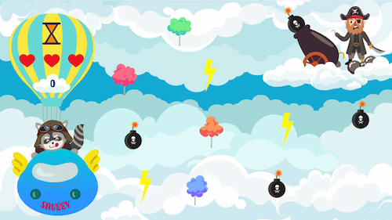
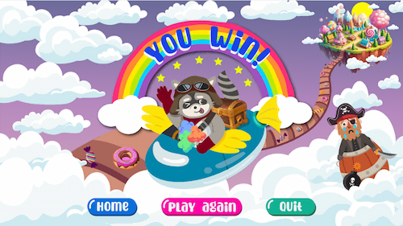
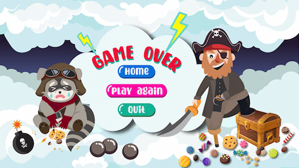

Ideudvikling :
Jeg brugte en ordbogsmetode til idé-generering til mit spil, hvilket førte til et koncept med
eventyr og fantasifulde elementer som en cottoncandy by i himlen. Jeg skabte derefter en
grundlæggende
historie om pirater, der udgør spillets tema. Mit moodboard illustrerer konceptet ved hjælp af
billeder. Gennem processen lærte jeg, hvordan man kan bruge metoder til idé-generering.
Analyse af valgte stil : I løbet af
processen med at skabe
styletiles for spillet, kunne jeg udvikle et mere konkret spildesign. Jeg tilegnede mig viden om
forskellige stilarter inden for spildesign og besluttede mig for at bruge kawaii-stilen og
specifikke UI-elementer. Derudover valgte jeg farver, der passer til spillet.
Aktivitetsdiagram : I
processen
med at oprette aktivitetsdiagrammer, fik jeg et helhedsindtryk af, hvordan systemet opfører sig i
forskellige situationer, og jeg kunne let forstå spillets flow. Jeg lærte, hvordan man opretter
aktivitetsdiagrammer ved hjælp af draw.io og forstod betydningen af hver form.
State Machine Diagram : Gennem oprettelsen af
et State Machine-diagram til spillet opnåede jeg en klar struktur af JavaScript-koden. Igennem denne
proces fik jeg en
forståelse af, hvordan man strukturerer og organiserer koden, og forståelse af funktioner,
aktiviteter og begivenheder i spillet.
Skitser : Efter at have valgt
spilkonceptet, skitserede jeg karaktererne,
baggrunden og UI-elementerne. I løbet af skitseringsprocessen lærte jeg om designskitser, herunder
karakterstile (kawaii stil, babybias), solid drawing og principperne bag Bouba/Kiki. Derudover lærte
jeg også baggrundsdesign-principper.
Papirprototype : Gennem
udviklingen af papirprototypen til spillet fik jeg indsigter og lærte flere vigtige
aspekter ved spildesign. Processen gav mig mulighed for at arbejde direkte
med
spilelementer som fysiske komponenter. Dette lærte mig at tænke i
realtid og skabe en mere håndgribelig forbindelse mellem spilleren og spiloplevelsen.




Illustrator :
I løbet af arbejdet med Illustrator har jeg udviklet færdigheder i at udnytte værktøjerne og
funktionerne i programmet. Under processen eksperimenterede jeg med farveskemaer og baggrundsdesign
for at opnå den ønskede stemning og appellere til målgruppen. Dette har styrket min forståelse af,
hvordan layout og komposition kan påvirke spillerens oplevelse og navigation i spillet.
Ved at bruge
Illustrator lærte jeg om vektorgrafik, hvilket er afgørende, ikke kun for spiludvikling, men også
for
at sikre en skalerbar og skarp visuel kvalitet. Derudover har jeg fået indsigt i, hvordan man gemmer
i SVG-format

JavaScript og CSS : Gennem temaet lærte
jeg
forskellige animationsteknikker i både CSS og JavaScript.
Jeg opnåede viden om funktioner og kodebegreber, samt lærte at skrive kode på en mere bæredygtig
måde. Dette viste sig særligt nyttigt, da jeg arbejdede med komplekse JavaScript-opgaver. Selvom det
var udfordrende at forstå JavaScript i begyndelsen, lykkedes det mig til sidst at opnå en bedre
forståelse af, hvordan CSS og JavaScript kan samarbejde for at skabe interaktive
brugergrænseflader.
Læs
dokumentation➪